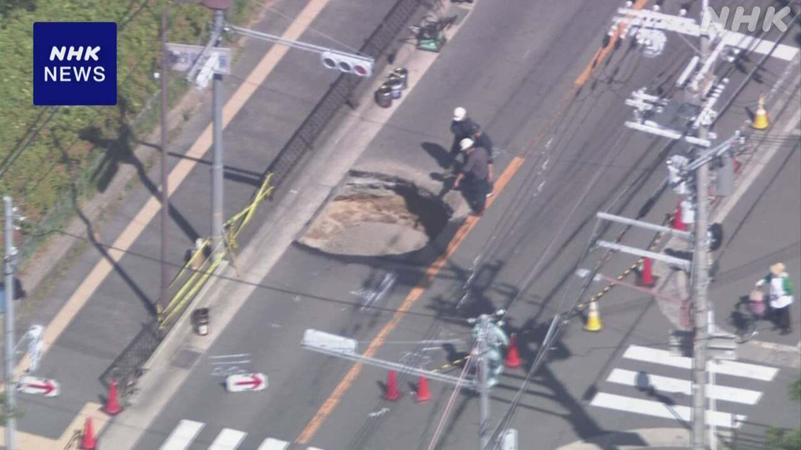
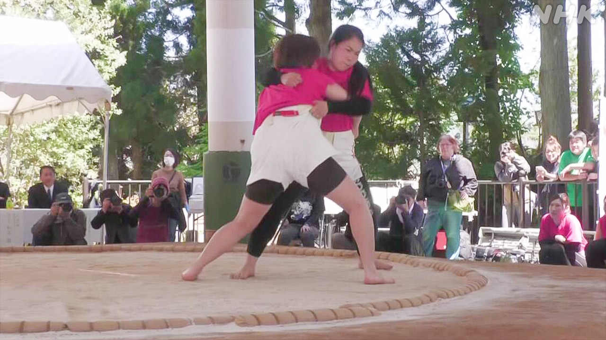

最新ニュース
1️⃣ ハンタウイルスが見つかった船 島に着いて客が降りた
ハンタウイルスのニュースです。
船でウイルスが見つかって、船に乗っていた人が3人亡くなりました。10日、大西洋にあるカナリア諸島の島に船が着きました。
船には、客や船で働く人、24の国の150人ぐらいが乗っていました。専門家が体の具合を調べて、船を降りています。そして、自分の国などに帰るため空港に行きました。日本人も1人いて、飛行機でイギリスに行きました。
WHOによると、この船でハンタウイルスがうつった人とうつっているかもしれない人は8人です。8人の中の3人が亡くなりました。
船から降りたあと、体の具合が悪くなった人もいます。WHOは、ハンタウイルスは、人から人にうつることは、ほとんどないと言っています。
2️⃣ 大阪府 道に穴があいて通れなくなった 直す工事をしている

道に穴があく問題が続いています。
大阪府摂津市で、10日、道に深さ3メートルぐらいの大きい穴があきました。
けが人はいません。
市によると、道の下の下水道をつないでいるところが壊れたのが原因です。
穴があいた道は駅の近くで、たくさんの人や車が通ります。市は、13日まで人や車が道を通れないようにして、直す工事をしています。
3️⃣ ニューヨークで日本の文化を紹介するパレードがあった
アメリカのニューヨークで「ジャパンパレード」というイベントがありました。
100ぐらいのグループが参加して、日本の文化を紹介しました。
踊ったり空手などの日本の武術を見せたりしながら大きい通りを進みました。
漫画の「呪術廻戦」は舞台になっています。舞台に出ている人もパレードに参加して、戦いの様子を見せました。
見ていた人たちはとても喜びました。パレードを見に来た女性は「アニメが舞台になったのを見るのが好きです」と話していました。
イベントでは、日本の食べ物を売る店もありました。5万人ぐらいが日本の文化を楽しみました。
4️⃣ 北海道福島町 女性だけの相撲の大会があった

北海道の福島町は大相撲の横綱が2人生まれた町です。
「母の日」に女性だけの相撲の大会を開いています。
今年は32回目でした。10日はいろいろな県などから60人ぐらいが参加しました。
参加した人が相撲を取る時に使う名前はユニークです。
「まこデラックス山」という名前で参加した西山まこさんは5回目の優勝をしました。
西山さんは「とてもうれしいです。母と応援してくれた人たちに感謝を伝えたいです」と話していました。
- 〜ている / 〜でいる
- 〜くらい / 〜ぐらい
- 〜など
- 〜ため
- 〜かもしれない / 〜かもしれません
- 〜によると
- 〜中
- 〜から
- 〜後 / 〜あと
- 〜こと
- 〜ないで
- 〜ところ
- 〜ようにする
- 〜ように
- 〜まで
- 〜という
- 〜がある / 〜がいる
- 〜たり〜たりする
- 〜ながら
- 〜になる
- 〜ても / 〜でも
- 〜だけ
- 〜てくれる / 〜でくれる
vebaev.github.io
Generated: 2026-05-11 11:25:02 UTC